Lewey Geselowitz
Specialist in Spatial Software Artistry.
Resume,
LinkedIn,
Facebook,
Twitter,
Github,
and Portfolio...
Teams
Career

Products
Recent
 Tesla Autopilot 10.69 Autopilot Visualization Lead |
 Tesla Software v11 (2021) UI Core and Autopilot Visualization |
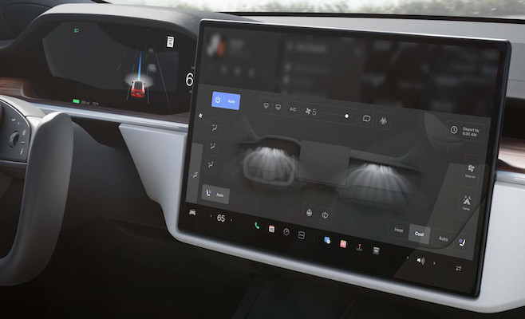 Tesla Model S Plaid (2021) UI Core Framework |
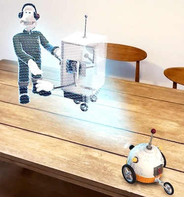 Wallace & Gromit: The Big Fix Up Unity MARS Technical Advisor [phone AR] |
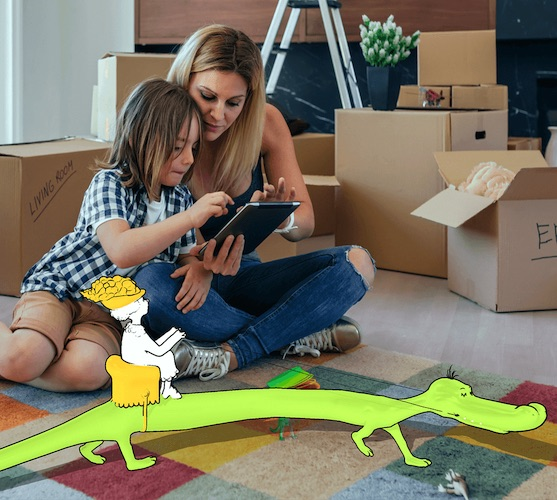 Dr Seuss's ABC in AR Unity MARS Technical Advisor [phone AR] |
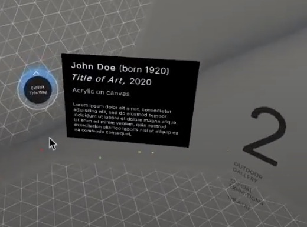 Unity MARS Engineering Manager |
Startups
 VERSES.IO Cofounder and Director |
 Karuna Labs VR Motion Therapy |
 4D Process Space-Time Visualization |
 Lewcid Systems CEO/Founder |
Disney
| 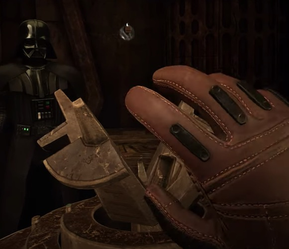 Vader Immortal: A Star Wars VR Series Prototype/Pre-Production [vr] |
 Star Wars: Droid Repair Bay Prototype/Pre-Production [vr] |
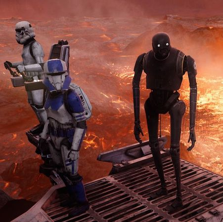 Star Wars: Secrets of the Empire Prototype/Pre-Production [void] |
 Google Seurat Announce Prototype to Production |
 CARNE y ARENA Prototype/Pre-Production |
Microsoft - Hololens
 HoloLens Analog Prototype and Launch Teams |
 Windows 10 Holographic Showcases and Holo-Academy Teams |
 Holographic MRI for Stanford Surgeons Lead on Prototype to Medical Pilot |
 Lowes HoloLens Experience AR Systems and Interfaces |
 Excel 2016 - 3D Maps Team Graphics and GPU Lead |
 Fragments (HoloLens) Early Gestures and Systems |
Microsoft - Kinect
Kinect for Xbox 360/One Special Thanks |
 Zoo Tycoon Gestures + Systems |
 Kinect Star Wars Gestures + Systems |
 Kinect Pixar Rush Special Thanks |
 Kinect Disneyland Adventures Gestures + Systems |
Kinectimals Gestures + Systems |
 Kinect Sports Special Thanks |
 Kinect Adventures! Kinect Adventures!Special Thanks |
Microsoft - Xbox
 Forza Motorsport 2 Graphics Engine and Pipeline Engineer |
 Fable II Performance Analysis |
 Viva Pinata PC Performance Engineer |
 Alan Wake Special Thanks |
 PIX for Windows DirectX/Xbox SDK Developer |
 Full House Poker Special Thanks |
University Years
| 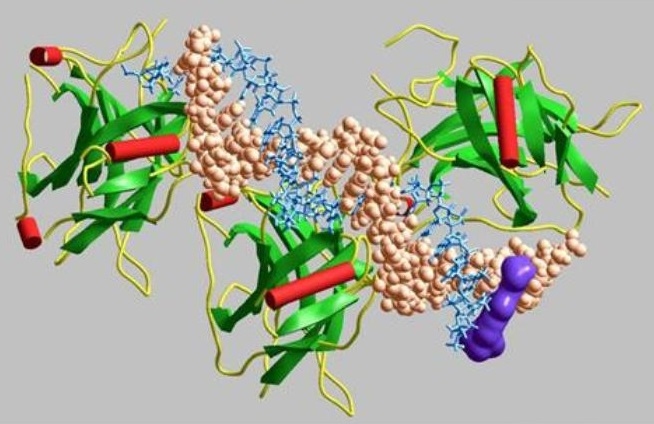 HyperProtein 1.0 Graphics/Bioinformatics Lead |
 HyperChem 8.0 Graphics Lead |
 Windows Vista / WPF Performance Team Intern |
Self Published
Interactive - Active
Heroine Dawn [web/mobile] |
 Carnival [web] |
 Dice Walker [web] |
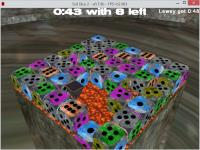 Evil Dice 2 Speedy Puzzle Game [win32] |
 Freed Invasion Quick Strategy Game [win32] |
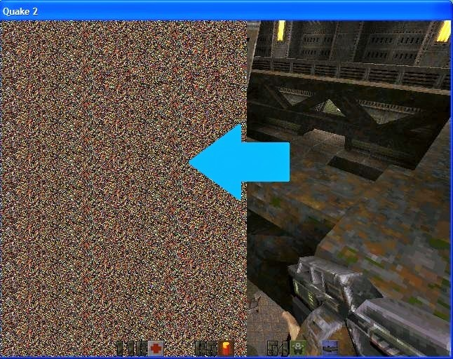 Quake II AbSIRD Stereogram Engine Mod [win32] |
 Evil Dice Puzzle Game Perfection [win32] |
 Alarm Clock T-Rex Sound Included [win32] |
Interactive - Passive
| 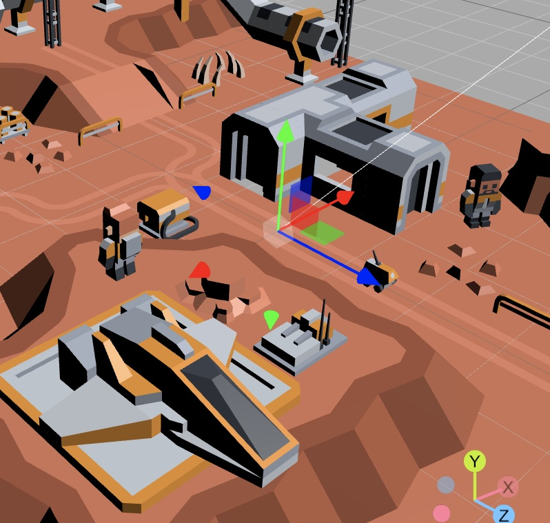 Lewcid Editor [web/mobile] |
 Freed Go [web/mobile/ multiplayer] |
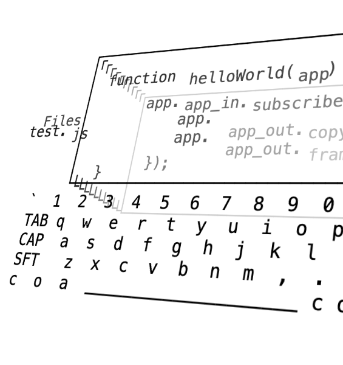 Lewdo [web/mobile] |
 San Francisco Home [verses/web/mobile] |
 4D Process [web/mobile] |
Shuzzle 2 Beta Invisible Block Shadow Puzzle [web/mobile] |
 Interactive History of Programming [web] |
 Classic Win32 Apps [win32] |
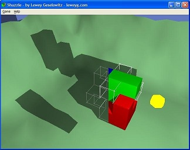 Shuzzle The Shadow Puzzle [win32] |
 Freed Go Mobius and Layered Go [win32] |
 ImpView 3D Implicit Equations [win32] |
 VSaber Voxel Carving Tool [win32] |
 Ink AniEd Ink Animator [tablet pc] |
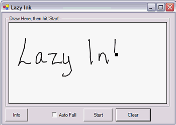 Lazy Ink Tablet PC Ink Effect [tablet pc] |
 Pocket PC Games and Tools [pocket pc] |
 WirEd and ModEd 3D Modeling Kit [win32] |
 Thinking Game 2 Connect 4 in 3D [win32] |
 Grapher 2D/3D Equations [win32] |
 Crystal Math Visual Symbolic Calculator [win32] |
 Teach Linked Lists Programming Education App [win32] |
 Towers of Hanoi Classic Recursion Example [win32] |
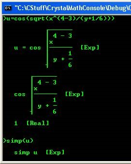 Crystal Math Console Command Line Tool [win32] |
Articles - Videos
Spatial Web, Gig-Economy & Blockchain Interview on Metaverse |
 Designing for VERSES and The Spatial Web |
 37th Birthday Portfolio Review [video] |
4D Process Concept Videos |
 3D UI Hand Gestures [video] |
 Kinect Gesture DevelopmentVideos and Articles [videos] |
 Augmented Walking Game Research |
Articles - Images
 Field Hand AR/3D Interface Project |
 Augmented Reality Contextual Messaging UX |
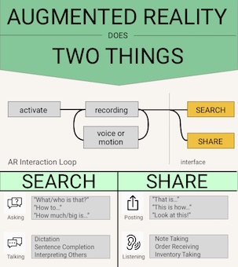 Augmented Reality Does Two Things |
 Motion Augmentation Key Techniques |
 ESL Extensible Shading Language |
 Branching JavaScript with Animation Support [.net] |
 AbSIRD Realtime SIRDS |
Sculpture & Literature
 Sculptures |
 Second Good Idea |
 Hoagie |
Yma |
 The Comet |
 Philosophy in Five Easy Pieces by Peter Geselowitz |
Spirituality
| 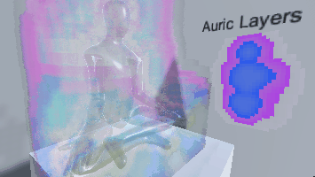 Energy Work Experiences [true-story] |
 Biofield Meditation [web/vr] |
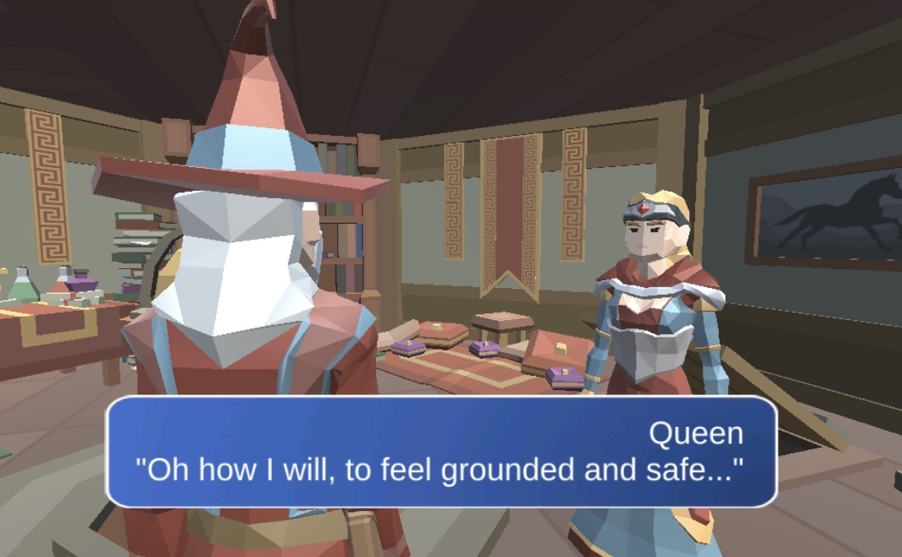 Healer Game Series [web/mobile] |
Energy Work References [book-links] |
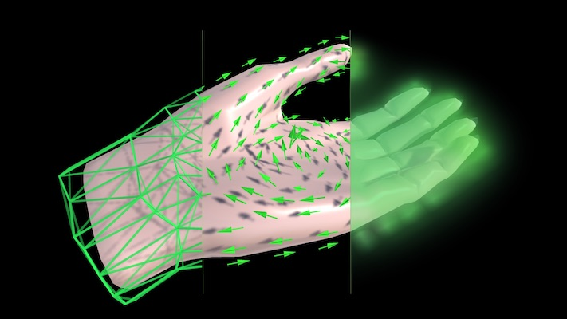 Biofield Simulation [source_code] |
Articles - Theory
 Excel 3D Patent Data Shaping Interface |
 Optimizing Computations |
Turing Field |
Holographic Interval |
Interval Arithmetic Interactive-Passive |
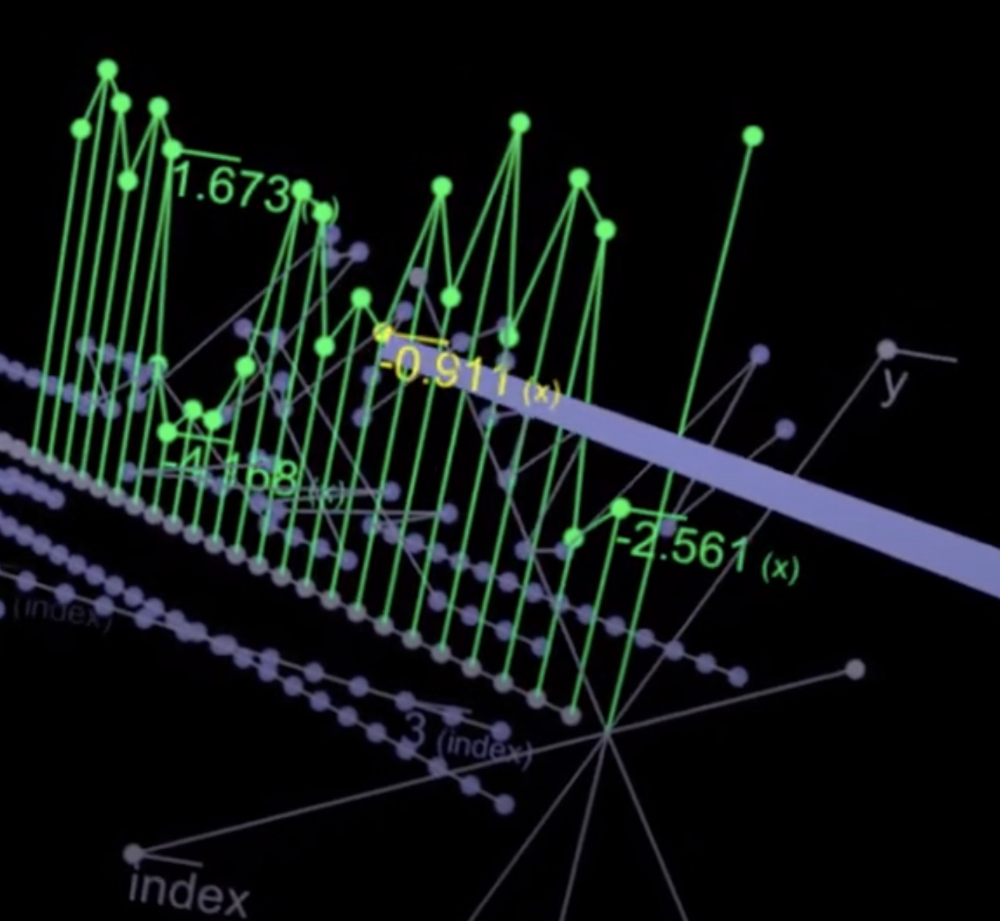 JSON in VR Experiment-Video |
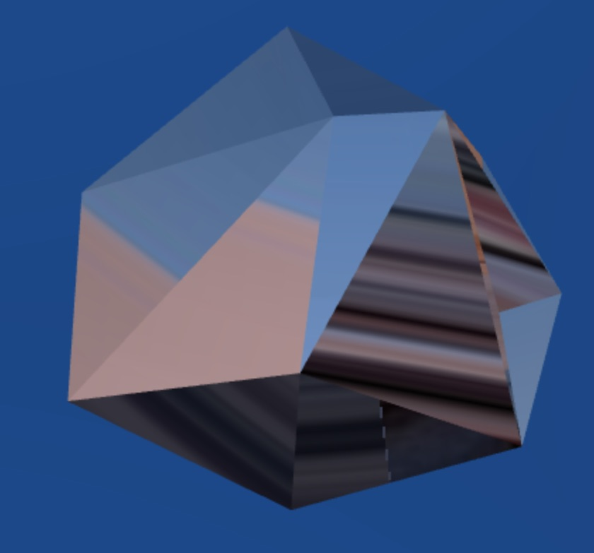 Facet-Count Interpolation Experiment-Passive |
Interests
Links


Contact: Email, Facebook or LinkedIn
Moments Caught in Motion:
~mid 2022: My daughter Viveka is born. I'm working at Tesla on the Autopilot UI and core UI frameworks.
~early 2015: I'm currently working on Office's Data Visualization eXperience team, trying to start the 3D revolution.
~early 2014: I'm currently the graphics lead on Power Map for Excel (a data visualization and mapping feature in Microsoft Excel), a team which I joined to focus on 3d data interaction after working on the interaction mechanics for the HoloLens during early production.
~early 2009: I'm currently working on the Kinect/NUI Publishing Team (Kinectimals, Kinect Disneyland, Kinect Star Wars, etc.) as part of Microsoft Studios. The web resume is up to date as of 1/1/2012. For more information, see the retroactive news items on the
main page .
~late 2007: I've had two internships at Microsoft (both as an SDE); first working on internal performance tools for the Windows Presentation Foundation in Windows Vista (then called Avalon for Windows Codename Longhorn), and second working on the shader pipeline for an Xbox 360 title. Recently I accepted a full-time position with the Microsoft Game Studios Tools and Technology team and should be starting sometime later this year. I also used to be the lead programmer for the HyperChem molecular modeling suite for HyperCube, Inc. here in Gainesville. Currently I'm mostly working on personal projects and am a research assistant for Dr. Jorg Peters.
~early 2004: Originally from South Africa, I'm now living in the U.S. and finishing up a Computer Science degree at the University of Florida. My main interests are computer graphics (preferably real-time), games, programming languages, user interfaces, philosophy, art theory, and of course my girlfriend.
Favorite Number: 20 centimeters per hour - the rate that water flows through a grape vine (see General Viticulture), useful to contemplate while in forests.
This site is mostly a collection of the large and little products, ideas and prototypes I've worked on over the years, learning and growing as a creator of software in the midst of the medium's early dynamic and fascinating evolution.
-Lewey Geselowitz
Posing for the Microsoft Platform Next (HoloLens/Kinect) team photo day:

| |
At the Kinect Star Wars launch... 
| |
With the Kinect Disneyland Adventures team... 
| |
Visiting Paris while staying with Microsoft Research Cambridge... 
|